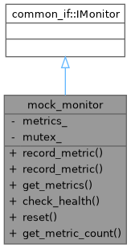
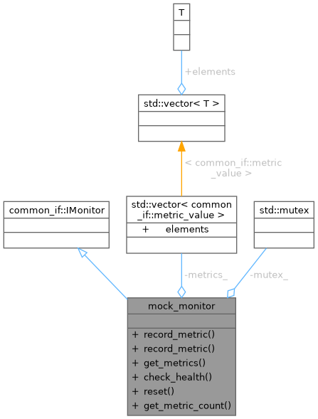

- Generated by
 1.12.0
1.12.0
|
Monitoring System 0.1.0
System resource monitoring with pluggable collectors and alerting
|
Mock IMonitor for testing cross-system integration. More...


Public Member Functions | |
| VoidResult | record_metric (const std::string &name, double value) override |
| VoidResult | record_metric (const std::string &name, double value, const std::unordered_map< std::string, std::string > &tags) override |
| Result< common_if::metrics_snapshot > | get_metrics () override |
| Result< common_if::health_check_result > | check_health () override |
| VoidResult | reset () override |
| size_t | get_metric_count () const |
Private Attributes | |
| std::vector< common_if::metric_value > | metrics_ |
| std::mutex | mutex_ |
Mock IMonitor for testing cross-system integration.
Implements common_system's IMonitor interface for testing.
Definition at line 95 of file test_cross_system_integration.cpp.
|
inlineoverride |
Definition at line 126 of file test_cross_system_integration.cpp.
|
inline |
Definition at line 139 of file test_cross_system_integration.cpp.
|
inlineoverride |
|
inlineoverride |
|
inlineoverride |
|
inlineoverride |
|
private |
Definition at line 97 of file test_cross_system_integration.cpp.
Referenced by get_metric_count(), get_metrics(), record_metric(), record_metric(), and reset().
|
mutableprivate |
Definition at line 98 of file test_cross_system_integration.cpp.
Referenced by get_metric_count(), get_metrics(), record_metric(), record_metric(), and reset().